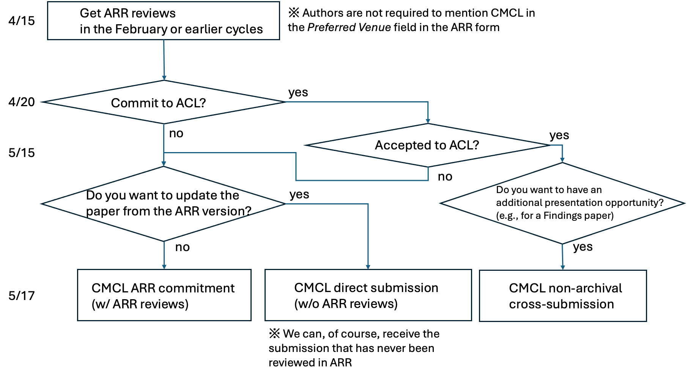

Call for Papers
The 13th edition of the Workshop on Cognitive Modeling and Computational Linguistics (CMCL 2024)
CMCL 2024 will be co-located with the 62nd Annual Meeting of the Association for Computational Linguistics (ACL 2024).
Workshop Description
CMCL 2024 is a one-day workshop held in conjunction with ACL 2024. CMCL invites papers on cognitive modeling, cognitively-inspired natural language processing, and, more broadly, the alignment of language models with human cognition/perception. The 2024 workshop follows in the tradition of earlier meetings at ACL 2010, ACL 2011, NAACL-HLT 2012, ACL 2013, ACL 2014, NAACL 2015, EACL 2017, LSA 2018, NAACL 2019, EMNLP 2020, NAACL 2021, and ACL 2022.
Scope and Topics
The research interests/questions include, but are not limited to:
- Human-like language acquisition/learning: How is language acquisition of language models (LMs) (dis)similar to humans, and why?
- Contrasting/aligning NLP models with human behavior data: What do humans compute during language comprehension/production, and how/why?
- Linguistic probing of NLP models: How well do current language models understand/represent/generalize language behaviorally/internally?
- Linguistically-motivated data modeling/analysis: How can one quantify a particular aspect of language?
- Emergent communication/language: What are the sufficient conditions for the emergence of language?
A more formal description of the workshop scope is:
- Stochastic models of factors influencing a speaker’s production or comprehension decisions.
- Models of semantic interpretation, including psychologically realistic notions of word and phrase meaning and composition.
- Incremental parsers for diverse grammar formalisms and their psychological plausibility.
- Models of speaker-specific linguistic adaptation and/or generalization.
- Models of first and second language acquisition and bilingual language processing.
- Behavioral tasks for better understanding neural models of linguistic representation.
- Models and empirical analysis of the relationship between mechanistic psycholinguistic principles and pragmatics or semantics.
- Models of lexical acquisition, including phonology, morphology, and semantics.
- Psychologically motivated models of grammar induction.
- Psychologically plausible models of lexical or conceptual representations.
- Models of language disorders, such as aphasia, dyslexia, or dysgraphia.
- Behavioral datasets or resources for modeling language processing or production in languages other than English.
- Models of language comprehension difficulty.
- Models of language learning and generalization.
- Models of linguistic information propagation and language evolution in communities.
- Cognitively-motivated models of discourse and dialogue.
Invited Speakers
We are pleased to announce the following invited speakers for the 2024 edition:
- Aida Nematzadeh (Google DeepMind)
- Frank Keller (University of Edinburgh)
Important Dates
- May 17, 2024: Paper submission/commitment deadline (cf. May 15, 2024: notification of ACL 2024)
- June 17, 2024: Notification of acceptance
- July 1, 2024: Camera-ready paper due
- August 15, 2024: Workshop dates Deadlines are at 11:59 pm AOE
Workshop submissions
CMCL accepts direct submissions through the OpenReview site: https://openreview.net/group?id=aclweb.org/ACL/2024/Workshop/CMCL.
We also receive papers already reviewed in ACL Rolling Review (ARR) February or earlier; their acceptance to CMCL will be based on the ARR reviews. ARR: https://openreview.net/group?id=aclweb.org/ACL/ARR
Commitment page:https://openreview.net/group?id=aclweb.org/ACL/2024/Workshop/CMCL_ARR_Commitment
You can find below a schema about submission and ARR cycle. 
Submission types
We invite three types of submissions:
(1) Archival regular workshop submissions that present original research in either long (8 pages + references) or short (4 pages + references) paper format.
(2) Non-archival submissions of extended abstracts that present preliminary results (from 2 to 4 pages + references).
(3) Non-archival cross-submission of long/short papers that present relevant research submitted/published elsewhere (including ACL “Findings of…” papers).
- Only regular workshop papers submitted via (1) will be included in the proceedings, but all types of papers will have a presentation opportunity in the workshop.
- Submissions must be formatted using the ACL style template (https://github.com/acl-org/acl-style-files) and submitted via a PDF file.
- We adhere to the ACL anonymity policy: https://www.aclweb.org/adminwiki/index.php/ACL_Anonymity_Policy
- This year we don’t host a shared task.
Workshop Organizers
Tatsuki Kuribayashi (MBZUAI, tatsuki.kuribayashi@mbzuai.ac.ae)
Giulia Rambelli (University of Bologna, giulia.rambelli4@unibo.it)
Ece Takmaz (University of Amsterdam, ece.takmaz@uva.nl)
Philipp Wicke (Ludwig Maximilian University LMU, pwicke@cis.lmu.de)
Yohei Oseki (University of Tokyo, oseki@g.ecc.u-tokyo.ac.jp)
Website
Sponsoring Institutions
Japan Society for the Promotion of Science